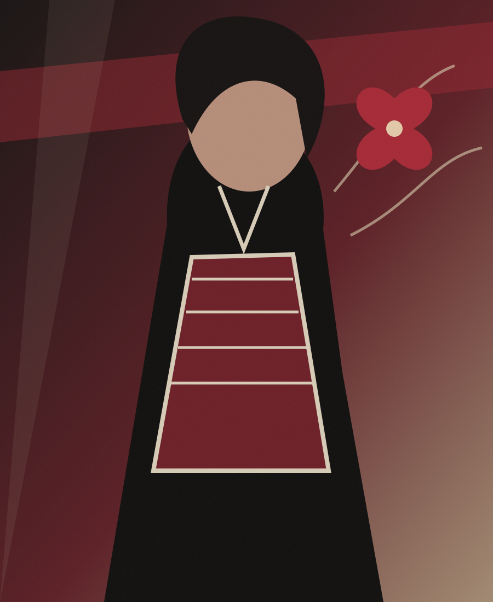
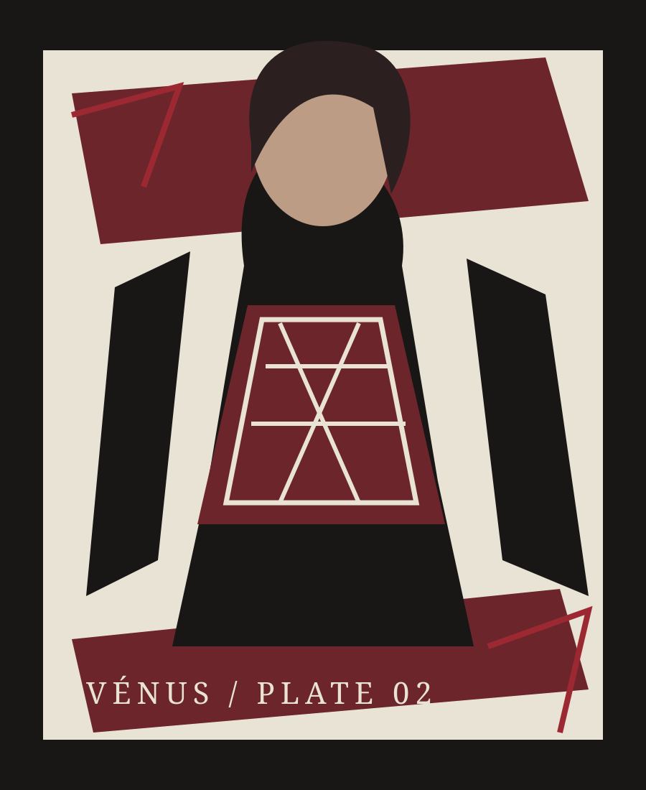

FIG. 01 / THE BODY AS LANGUAGE VÉNUS · ORIGINAL VECTOR PLATE+
+
+
+
A STUDY OFVÉNUSSTYLE
Silueta, color y expresión como herramientas para construir una identidad visual propia.
NOT A RULEBOOK.
A PERSONAL ARCHIVE.OPEN THE TEST ↗
A PERSONAL ARCHIVE.OPEN THE TEST ↗
FORM / COLOR / ATTITUDEVÉNUS PERSONAL STYLE JOURNALPART 7 — 2026
01 — THE INDEXPAGE 02
A FIELD GUIDE TO YOURSELF
Vestirse también es una forma de pensar.
No venimos a dictar qué te favorece ni a convertir tu cuerpo en una ecuación. VÉNUS cruza sistemas de imagen, referencias culturales y exploración personal para que puedas reconocer tus propios códigos.
A PERSONAL STYLE STUDY / CDMX

02 — DEPARTMENTS
Inside this issue
PAGE 03—04FIG. 03 / NO FIXED IDENTITY
PART 07 / PAGE 05
✛
Tu estilo no necesita permiso.
Empieza por observar. Después prueba, contradice, cambia de opinión. La identidad no es una respuesta final.
DISCOVER YOUR FORMULA ↗VÉNUS © 2026 · INDEPENDENT STYLE JOURNAL · ALL RIGHTS RESERVED